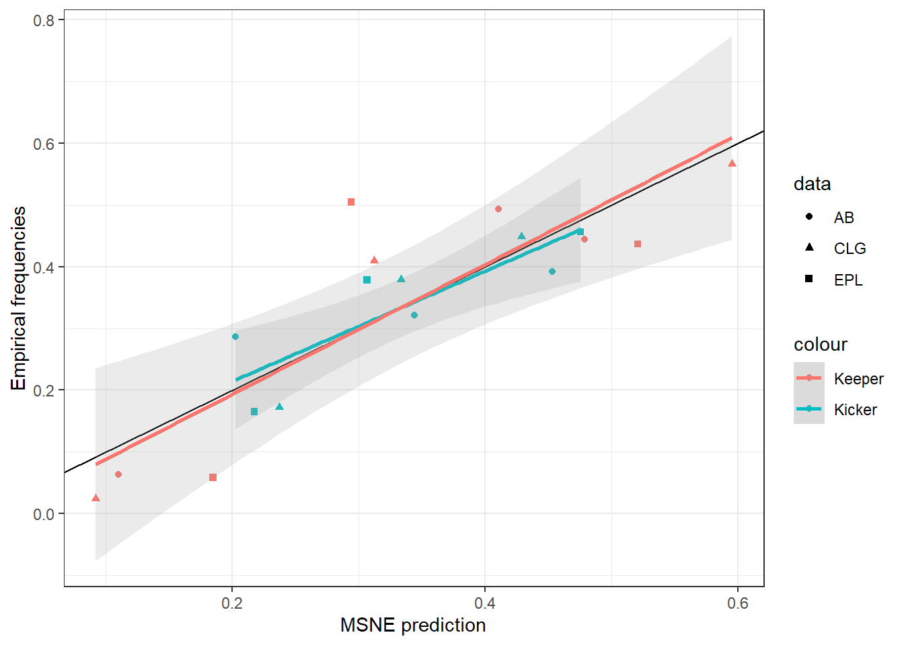

9 Penalty Kicks and MSNE
library(tidyverse)
# Source: kaggle.com/mauryashubham/english-premier-league-penalty-dataset-201617
EPL<-(read.csv("penalty_data.csv")
%>% tibble()
%>% mutate(Y = 1*(Scored=="Scored"))
)
EPL %>% sample_n(10) %>% knitr::kable()| No. | Match.Week | Date | Player | Team | Match | Time.of.Penalty.Awarded | Scored | Final.Results | Foot | Kick_Direction | Keeper_Direction | Saved | Y |
|---|---|---|---|---|---|---|---|---|---|---|---|---|---|
| 72 | 22 | 22-Jan-17 | Alexis Sánchez | Arsenal | Arsenal vs Burnley | 90’+8’ minute | Scored | 42737 | R | C | L | NA | 1 |
| 29 | 8 | 15-Oct-16 | Christian Benteke | Crystal Palace | Crystal Palace vs West Ham | 45’+1’ minute | Missed | 0-1 | R | R | L | 0 | 0 |
| 55 | 17 | 17-Dec-16 | Álvaro Negredo | Middlesbrough | Middlesbrough vs Swansea | 29’ minute | Scored | 3-0 | L | L | R | NA | 1 |
| 38 | 12 | 19-Sep-16 | Riyad Mahrez | Leicester | Watford vs Leicester | 15’ minute | Scored | 42737 | L | L | R | NA | 1 |
| 1 | 1 | 13-Aug-16 | Riyad Mahrez | Leicester | Hull vs Leicester | 47’ minute | Scored | 42737 | L | C | R | NA | 1 |
| 13 | 3 | 27-Aug-16 | Jermain Defoe | Sunderland | Southampton vs Sunderland | 80’ minute | Scored | 42736 | R | L | L | NA | 1 |
| 78 | 25 | 11-Feb-17 | Alexis Sánchez | Arsenal | Arsenal vs Hull | 90’+3’ minute | Scored | 2-0 | R | L | L | NA | 1 |
| 5 | 2 | 19-Aug-16 | Zlatan Ibrahimovic | Man United | Man United vs Southampton | 52’ minute | Scored | 2-0 | R | L | R | NA | 1 |
| 73 | 23 | 31-Jan-17 | Álvaro Negredo | Middlesbrough | Middlesbrough vs West Brom | 17’ minute | Scored | 42736 | L | L | R | NA | 1 |
| 104 | 37 | 14-May-17 | Luka Milivojevic | Crystal Palace | Crystal Palace vs Hull | 85’ minute | Scored | 4-0 | R | R | L | NA | 1 |
print(dim(EPL))## [1] 106 14EPLcounts<-matrix(0,3,3)
colnames(EPLcounts)<-c("L","C","R")
rownames(EPLcounts)<-c("L","C","R")
EPLscored<-EPLcounts
for (ii in c("L","C","R")) {
for (jj in c("L","C","R")) {
EPLcounts[ii,jj]<-dim(EPL %>% filter(Kick_Direction==ii & Keeper_Direction==jj))[1]
EPLscored[ii,jj]<-dim(EPL %>% filter(Kick_Direction==ii & Keeper_Direction==jj & Scored=="Scored"))[1]
}
}
EPLKickerPayoff<-EPLscored/EPLcounts
colnames(EPLKickerPayoff)<-c("l","c","r")
print(EPLKickerPayoff)## l c r
## L 0.6500000 1 0.8800000
## C 1.0000000 0 0.8888889
## R 0.8333333 1 0.55555569.1 Other datasets:
Azar, Ofer H., and Michael Bar-Eli. “Do soccer players play the mixed-strategy Nash equilibrium?.” Applied Economics 43, no. 25 (2011): 3591-3601.
Their Table 1, 3, 4
# Counts
ABcounts<-rbind(c(54,1,37),c(41,10,31),c(46,7,59))
#Stopped kicks
ABstopped<-rbind(c(16,0,0),c(4,6,1),c(0,0,15))
ABKickerPayoff<-1-ABstopped/ABcounts
colnames(ABKickerPayoff)<-c("l","c","r")
rownames(ABKickerPayoff)<-c("L","C","R")
print(ABKickerPayoff)## l c r
## L 0.7037037 1.0 1.0000000
## C 0.9024390 0.4 0.9677419
## R 1.0000000 1.0 0.7457627Chiappori, P-A., Steven Levitt, and Timothy Groseclose. “Testing mixed-strategy equilibria when players are heterogeneous: The case of penalty kicks in soccer.” American Economic Review 92, no. 4 (2002): 1138-1151.
Their tables 3 and 4
# Counts
CLGcounts<-t(rbind(c(117,48,95),c(4,3,4),c(85,28,75)))
CLGKickerPayoff<-t(rbind(c(0.632,0.812,0.895),c(1.00,0,1.00),c(0.941,0.893,0.440)))
colnames(CLGKickerPayoff)<-c("l","c","r")
rownames(CLGKickerPayoff)<-c("L","C","R")
print(CLGKickerPayoff)## l c r
## L 0.632 1 0.941
## C 0.812 0 0.893
## R 0.895 1 0.4409.2 MSNE - empirical payoffs
Note that we can solve for MSNE by noting that all expected payoffs must be constant, and that probabilities must add to 1:
\[ \begin{aligned} EU(a)&=\text{a constant}\\ U_ip_i&=c\\ p_i&=U_i^{-1}c\\ \text{probabilities must add to 1:} \\ p_i&=U_i^{-1}c / \sum_a U_i^{-1}c = U_i^{-1}c / \sum_a U_i^{-1}c \end{aligned} \] Only works if payoffs are all non-negative, but we can always add a large constant to \(U\) to fix this, and not change any of the incentives.
U<-list(CLG=CLGKickerPayoff,AB=ABKickerPayoff,EPL=EPLKickerPayoff)
COUNTS<-list(CLG=CLGcounts,AB=ABcounts,EPL=EPLcounts)
D<-tibble()
action<-c("L","C","R")
for (ii in 1:length(U)) {
uu<-U[[ii]]
cc<-COUNTS[[ii]]
pERow<-cc%*%c(1,1,1)/sum(cc)
pECol<-t(cc)%*%c(1,1,1)/sum(cc)
pNashCol<-solve(uu)%*%c(1,1,1)/sum(solve(uu)%*%c(1,1,1))
pNashRow<-solve(t(1-uu))%*%c(1,1,1)/sum(solve(t(1-uu))%*%c(1,1,1))
D<-tibble(pNashRow,pERow,pECol,pNashCol,action)%>% mutate(
data = names(U)[ii]
) %>% rbind(D)
}
D %>% kbl() %>% kable_styling(full_width=FALSE,htmltable_class="lightable-classic")| pNashRow | pERow | pECol | pNashCol | action | data |
|---|---|---|---|---|---|
| 0.4756243 | 0.4563107 | 0.43689320 | 0.52080856 | L | EPL |
| 0.2175981 | 0.1650485 | 0.05825243 | 0.18489893 | C | EPL |
| 0.3067776 | 0.3786408 | 0.50485437 | 0.29429251 | R | EPL |
| 0.3440421 | 0.3216783 | 0.49300699 | 0.41084634 | L | AB |
| 0.2028871 | 0.2867133 | 0.06293706 | 0.11034014 | C | AB |
| 0.4530709 | 0.3916084 | 0.44405594 | 0.47881352 | R | AB |
| 0.4289138 | 0.4488017 | 0.56644880 | 0.59532580 | L | CLG |
| 0.2375184 | 0.1721133 | 0.02396514 | 0.09215786 | C | CLG |
| 0.3335678 | 0.3790850 | 0.40958606 | 0.31251634 | R | CLG |
(
ggplot()
+geom_point(data=D,aes(x=pNashRow,y=pERow,color="Kicker",shape=data))
+geom_point(data=D,aes(x=pNashCol,y=pECol,color="Keeper",shape=data))
+geom_abline(slope=1,intercept=0)
+geom_smooth(data=D,aes(x=pNashRow,y=pERow,color="Kicker"),method="lm",alpha=0.2)
+geom_smooth(data=D,aes(x=pNashCol,y=pECol,color="Keeper"),method="lm",alpha=0.2)
+theme_bw()
+xlab("MSNE prediction")
+ylab("Empirical frequencies")
)